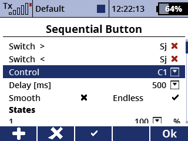
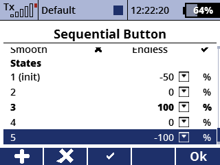

Define a sequence of states (deflections) and increase/decrease the current state sequentially.
A virtual control is used as the ouput.
 
The switches used to go to the next/previous state.
Select one out of the ten virtual controls as the output.
Set the control's delay in ms.
Uses a lowpass filtering algorithm instead of linear interpolation when checked.
When checked, the state can jump to the other end of the sequence. This applies to both directions.
The list of states. The deflection for each state can be set.
The current state is displayed in bold font.
The initial state (on application initialization) can be selected with the button F(3) and is indicated by the (init) phrase.
The number of states has to be between 1 and 20.